🏆 Weekly leaderboard
Badge = 3 pts, completed mission = 2 pts, finished challenge = 5 pts. The podium is announced every Monday.
Free VALORANT coach
After each match, Nextround finds your #1 mistake and gives you one single mission for the next game. During the game, it shows the right tip at the right time.
Nextround runs in the background with Overwolf. Nothing to set up.
Between rounds, a short tip appears in a free corner of your screen.
Your #1 mistake, your mission, and proof that you improve in the next game.
After the game
No wall of stats: Nextround looks for what cost you the most rounds (dying first, keeping your abilities, untraded deaths, aiming too low…) and gives you one concrete goal for the next match.
In the next game, it checks whether you succeeded.
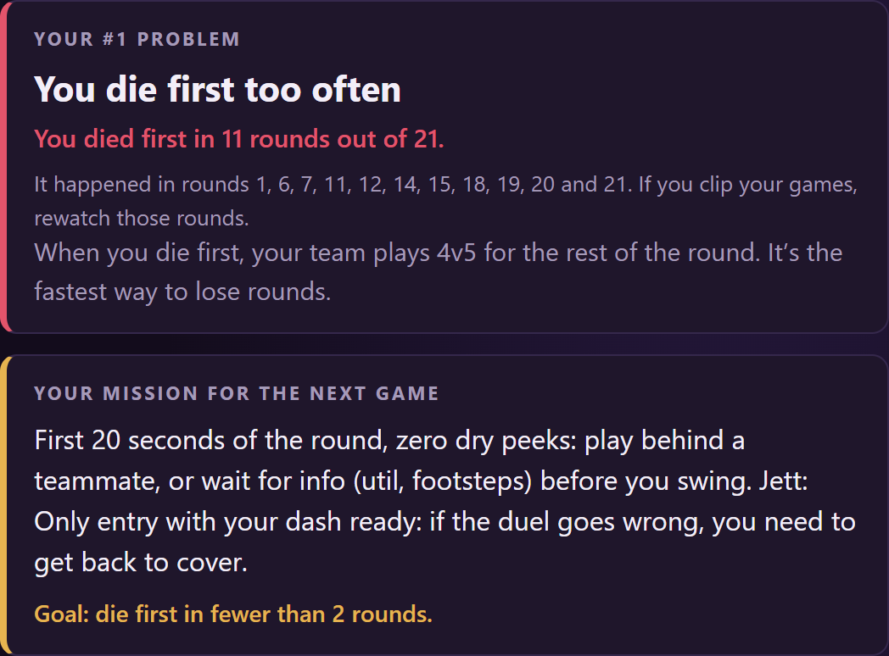
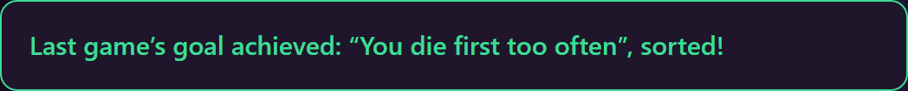
During the game
Lost pistol round, team not buying together, failed retake, lost post-plant, losing streak… Nextround recognizes the situation and shows a short, concrete tip.
Only between rounds, never during combat. You can move it or turn it off.
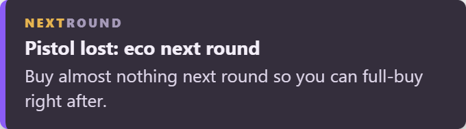
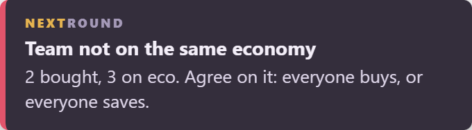
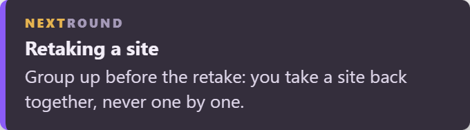
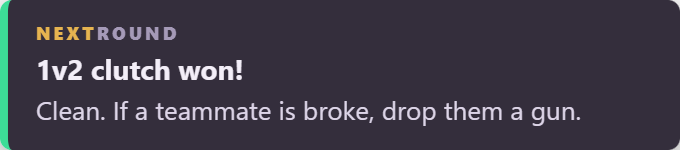
Your level
Your headshot rate is compared to the average of players at your rank. You finally know whether your aim is really holding you back.
And every round is broken down: retakes, post-plants, pistol rounds, eco rounds, clutches.
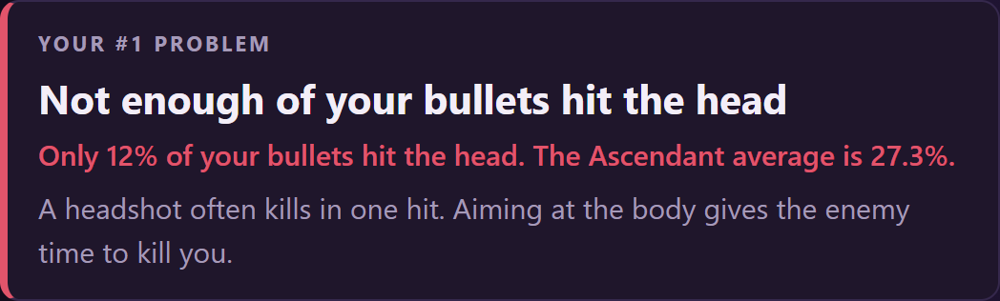
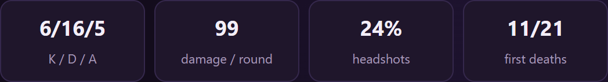
Improving is a game
16 badges to unlock (Sniper, ACE, Clutch King, Support, Pillar…) and 3 challenges that change every Monday, the same for everyone.
One more reason to queue for the next game.
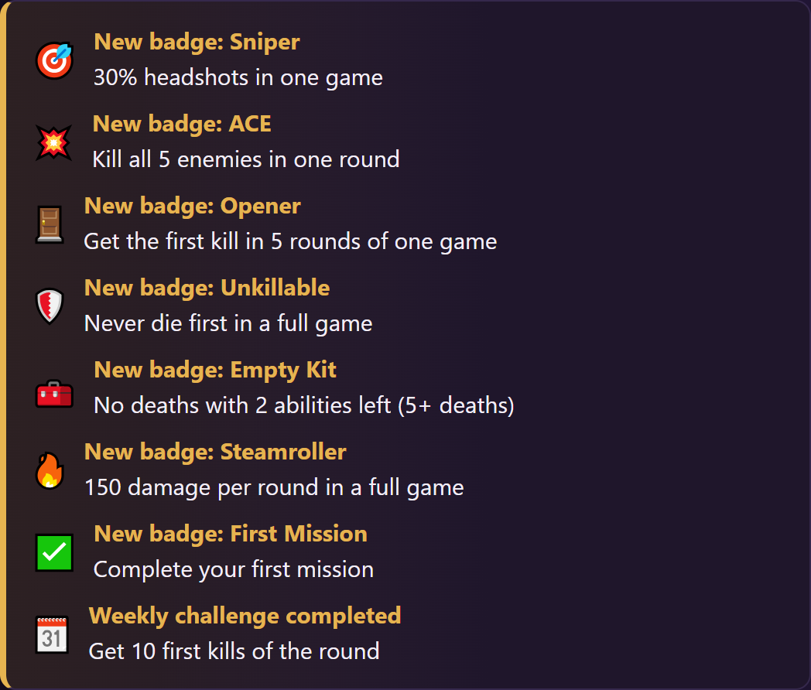
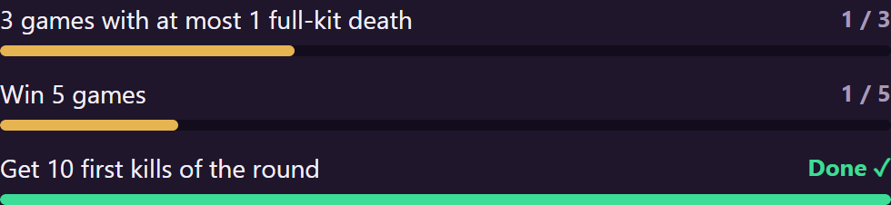
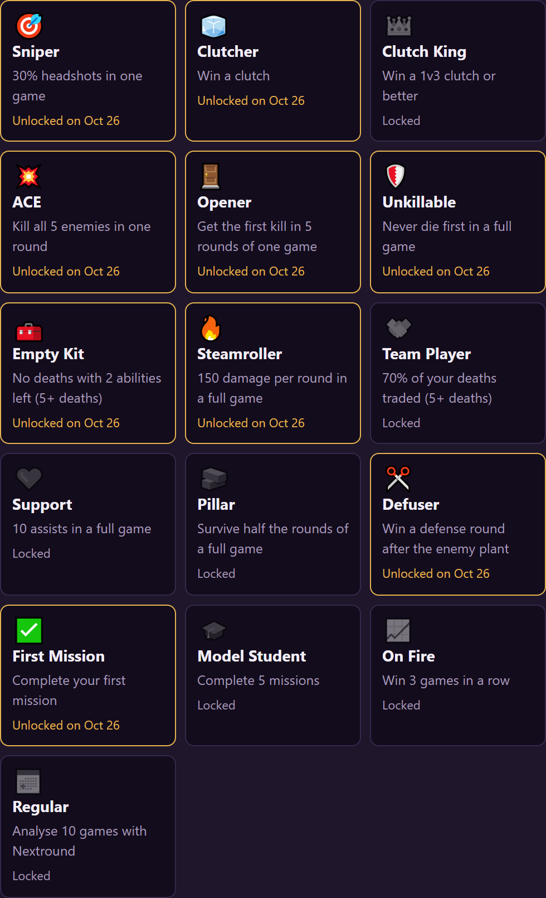
The community
Turn on sharing in the app: your badges, completed missions and challenges show up on the Nextround server and earn you points.
Badge = 3 pts, completed mission = 2 pts, finished challenge = 5 pts. The podium is announced every Monday.
The more missions you complete, the higher your role:
RecrueConfirméExpertMaître Nextround
The app gives you a code: type /lier on the server, just once. Your Riot ID is never shared.
The Discord server is in French for now.
Join the DiscordYes, completely. Nextround shows a small Overwolf ad in the recap window, that’s all.
Nextround only uses the match data officially provided by Overwolf. It doesn’t read the game’s memory, doesn’t automate anything and never shows any info about enemies. It only analyses what you did yourself.
No, Overwolf only runs on Windows PCs. Nextround is therefore for VALORANT on PC only.
Yes: the app and the demo are available in English and French. The language follows your Windows settings, and you can change it in the app’s settings.
The app is being reviewed by Overwolf and Riot Games. A closed beta will open first for Discord members on the “Liste bêta”. Join the server to be notified.
Your matches stay on your PC. Only what you choose to send (feedback on a tip, idea or bug report, survey, Discord sharing, off by default) and anonymous crash reports go through our relay. Everything is detailed in the privacy policy.
Yes! There is an “Idea? Bug?” form in the app, and a dedicated channel on the Discord.
Join the Discord and answer “Yes” to the beta question: we’ll let you know as soon as it opens.
Join the beta